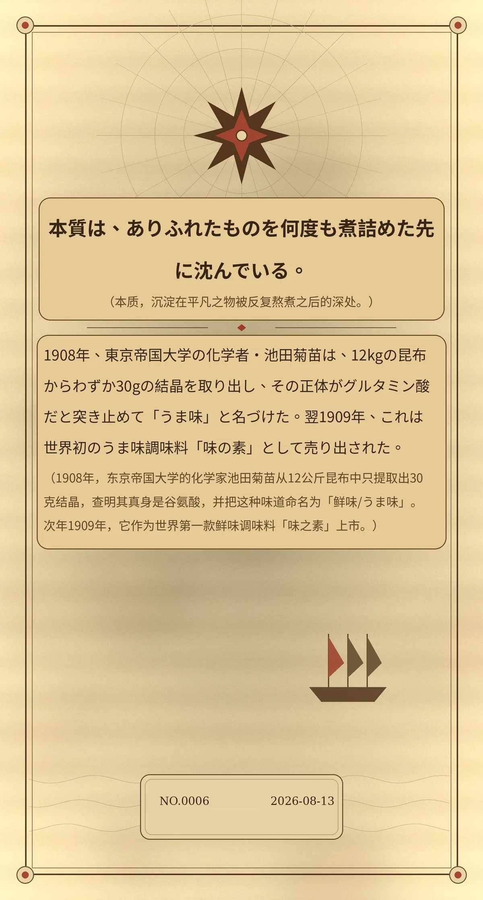

本質は、ありふれたものを何度も煮詰めた先に沈んでいる。（本质，沉淀在平凡之物被反复熬煮之后的深处。）
1908年、東京帝国大学の化学者・池田菊苗は、12kgの昆布からわずか30gの結晶を取り出し、その正体がグルタミン酸だと突き止めて「うま味」と名づけた。翌1909年、これは世界初のうま味調味料「味の素」として売り出された。（1908年，东京帝国大学的化学家池田菊苗从12公斤昆布中只提取出30克结晶，查明其真身是谷氨酸，并把这种味道命名为「鲜味/うま味」。次年1909年，它作为世界第一款鲜味调味料「味之素」上市。）